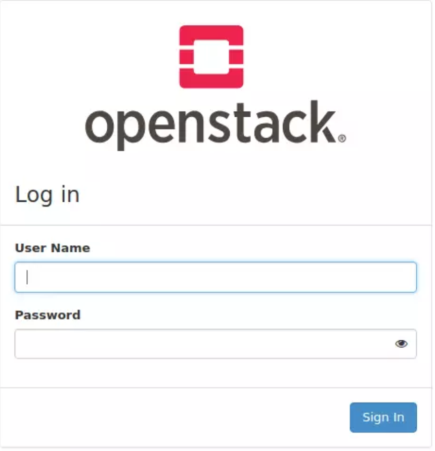

OpenStack
OpenStack is a set of software tools for building and managing cloud computing platforms for public and private clouds. OpenStack is an open source platform that uses pooled virtual resources to build and manage private and public clouds. You can install OpenStack on CentOS and Ubuntu. This blog will show you how to install Openstack on Ubuntu using DevStack. DevStack is a collection of scripts which enables you to deploy a complete OpenStack environment from git master, in Virtual Machine, Home Desktop or your Laptop.
Step 1: Update Ubuntu system
Run these commands to ubdate you system
sudo apt update
sudo apt -y update
sudo apt -y dist-update
After update your system reboot it.
sudo reboot
Step 2: Add Stack User
Run these commands in your terminal to add Stack user
sudo useradd -s /bin/bash -d /opt/stack -m stack
Enable sudo privileges for this user without need for a password.
echo "stack ALL=(ALL) NOPASSWD: ALL" | sudo tee /etc/sudoers.d/stack
To test the stack user run these commands to switch to stack user
sudo su - stack
this will change the user to stack
stack@.....:~$ sudo su -
root@....:~#
Step 3: Download DevStack
Clone Destack deployment code from Github.
su - stack
sudo apt -y install git
git clone https://git.openstack.org/openstack-dev/devstack
Create a local.conf file with 4 passwords and Host IP address.
cd devstack
vim local.conf
[[local|localrc]]
# Password for KeyStone, Database, RabbitMQ and Service
ADMIN_PASSWORD=StrongAdminSecret
DATABASE_PASSWORD=$ADMIN_PASSWORD
RABBIT_PASSWORD=$ADMIN_PASSWORD
SERVICE_PASSWORD=$ADMIN_PASSWORD
# Host IP - get your Server/VM IP address from ip addr command
HOST_IP=192.168.10.100
Step 4: Start Opentstack Deployment on Ubuntu with DeVStack
Start the installation of OpenStack by runing these commands:
cd devstack
./stack.sh
This will install Keystone, Glance, Nova, Placement, Cinder, Neutron, Horizon
This installation will take about 20 mintues depending on the speed of your internet.
You will see this once the installation is done

Step 5: Access OpenStack Dashboard
Copy the Horizon URL and paste it into your web browser. It will open the OpenStack login and you can login using default admin user and the password you created.
